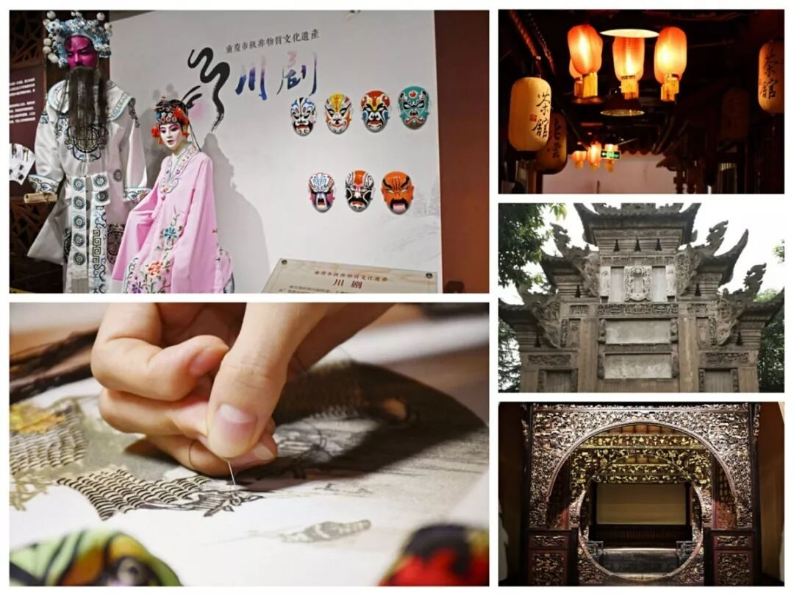
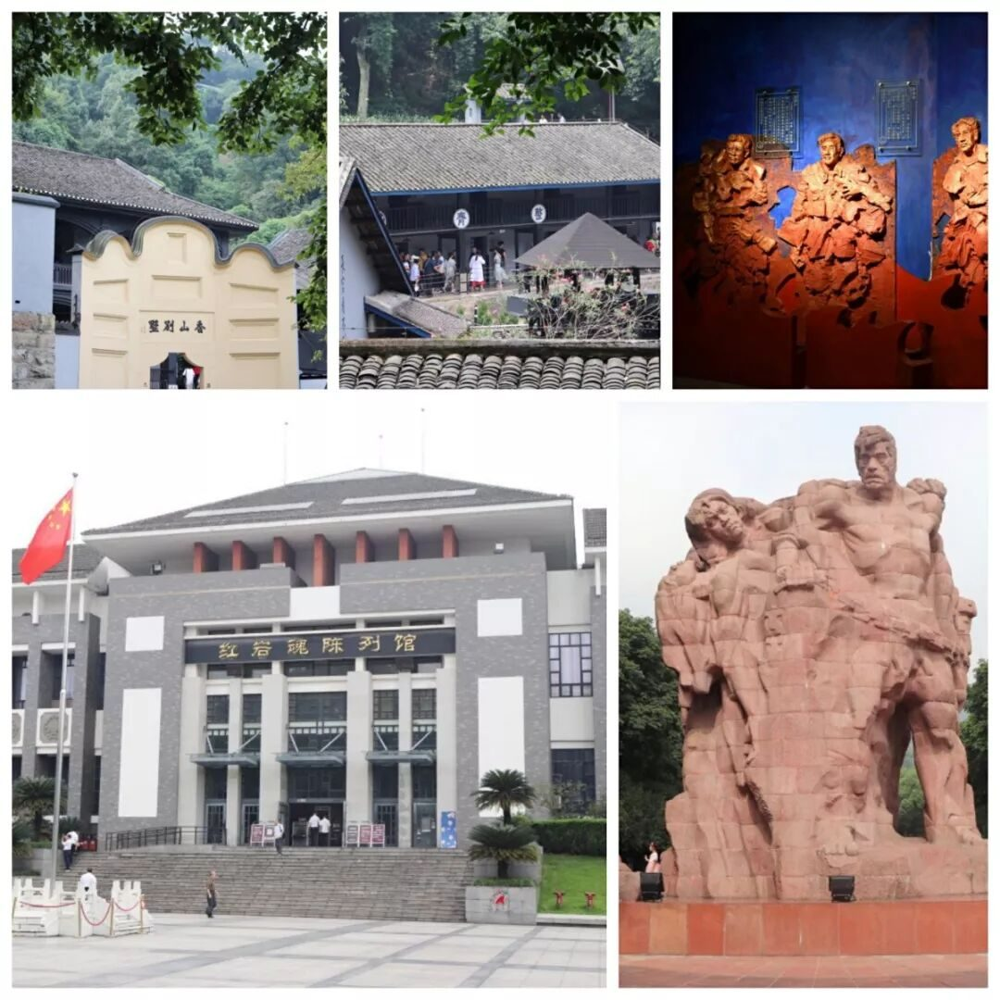
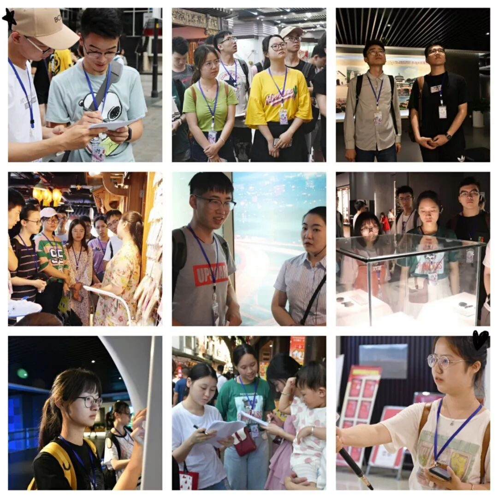
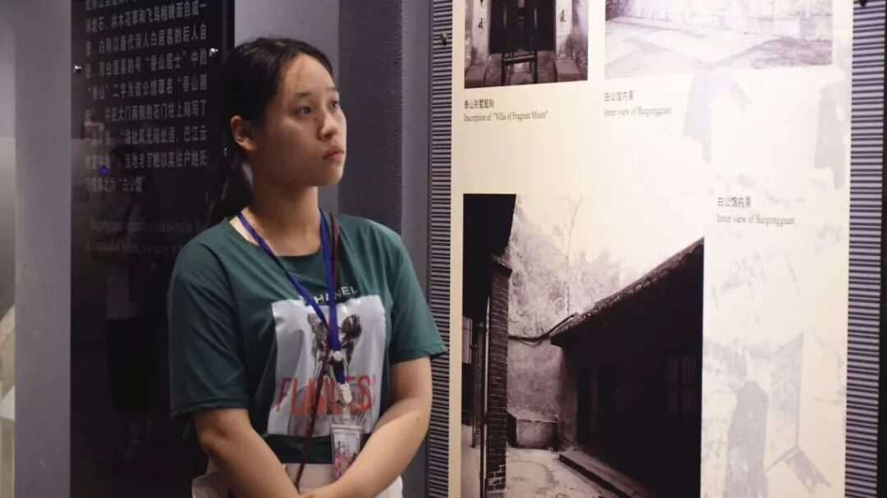
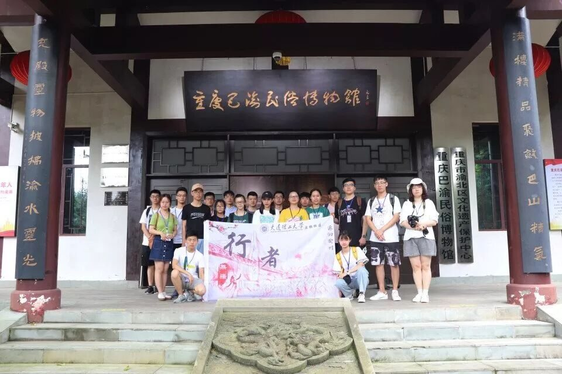

【渝传尺素•十三】一山一渝州，一步一行者

行者
陈嘉颖

遇上行者，是与自由灵魂的相撞；
成为行者，是对历史文化的守候。

“千百次的回眸，换来了今生的同船相渡”
相逢不易，相知难行，我曾遗憾过未与行者无疆更早的相知相识，然而时间的考验，自我的沉淀，带去的是初知时的好奇与冲动，留下的是对加入行者无疆更坚定的信念，和从游者到行者的历练沉淀。无数次的关注和擦肩而过，终是换来了与行者无疆的相遇，与十八名行者七天六夜的相知相伴。火车徐徐入渝州，山城的故事缓缓展开。
“每个城市都有属于她独特的古往今来，作为行者的我们，穷山涉水只为倾听她的故事。”
为了让行者们更好的熟识渝州的地方文化，行者无疆为临行的行者们准备了四期的行者课堂。从行程出发，巴渝文化和英雄文化一一道来，这是我对渝州的初印象，也让我对渝州之行更心生向往。然而“纸上得知终觉浅，绝知此事要躬行”。
我们站在重庆的今日，展望未来，回首往昔，惊叹于重庆立足山城，精心规划的城市璀璨明天，认识到了重庆作为东西走廊之于国家发展的重要战略地位。


访民俗古村落，寻蜀绣坊，跋步床的雕工精湛，蜀绣的细致精巧，川剧的热烈豪放，一件件精美的工艺品，一段段让人拍手叫绝的技艺表演，融入的是匠心，展现的是渝州生生不息的文化命脉。

追思烈士英魂，感悟英雄文化，腥风血雨的日子不再，但红岩精神与民族气节随着英雄的故事置入骨髓。


我们追随历史的车辙，走过渝州的土地，聆听重庆浅浅道来她的古往今来；
我们步山城小巷，发问卷，做采访，倾听“历史过路人”对渝州道的衷肠。
走过，听过，方知，历史与未来，那些文人墨客的浅唱低吟，那些流光溢彩的巴渝民俗，抗战时期那抹鲜血的红色，当今山城的热闹与繁华，皆是构成重庆文化的浓墨重彩。

或许这便是城市文化的魅力，引你不远万里赴文化之约，步林间小路，穿山间步道，历史的画卷徐徐展开，英雄的故事娓娓道来，走时，依依不舍，道一声不虚此行。

“每座城市都有她感人至深的因果，于我，渝州的灵犀，在于和行者共同走过的文化苦旅。”
行者无疆，你是我与渝州故事里的浓墨重彩。
前期的精心筹备，一日多的入渝之路，每日的风雨兼程，不惧日晒雨淋。文化调研，因为肩负更多责任，也会更累。日行万步的行程，当有人同行也觉有趣；工作至凌晨时分，有人陪伴等侯，收获的更多是感动；一日的疲乏困倦敌不过晚间的行者交流会的热情分享，行路中的困乏也在抵达目的地时一扫而空。回顾七天六夜的文化之旅，相机里留下的风景远敌不过同行者的身影。
或许是我与行者无疆的故事，还交织了许多错过和错误，这使我对行者无疆多了份别样的情愫，更是不舍。我记得可有人与我说过的
“行者无疆需要行者们的实践与建设，而行者们也会在行者无疆成长。”

如果如今，你问我，
何为游者，何为行者？
那大概是，
赏一处景，食一方小吃，
感动自己者，为游者。
访一段史，思水土佳人，
感动他人者，为行者。
如若你要问我，
何为行者无疆？
我是说不清的，
一次渝州逆旅，
一场文化盛宴，
是一份责任，
是一场感动，
又许是身在路上，
怀赤忱之心的行者们不变的家。

来源丨行者无疆实践团
文字丨陈嘉颖
排版丨陈嘉颖
审核丨邓子孚 段智然
视频丨陈辉
行者无疆实践团
QQ：2758025831

随行者一起认识世界
长按二维码